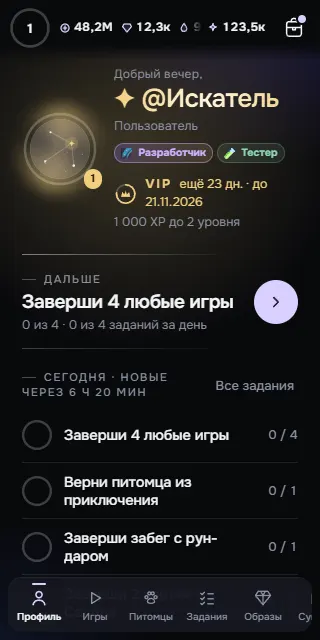
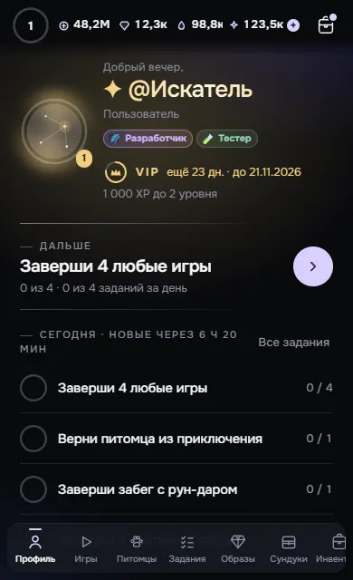
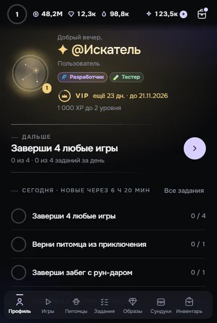

Три варианта навигации. Нажимай разделы, открывай «Ещё», проверяй поиск и возврат. Это отдельный макет: игровые действия здесь не выполняются.
А / РЕКОМЕНДУЮ
Пять кнопок внизу
Профиль · Игры · Задания · Питомцы · Ещё. Остальные разделы — в «Ещё», без повторов. На 320 px помещается целиком.
До сундуков, образов и топа — два нажатия. Зато меню не нужно листать. Шесть кнопок тоже показаны по заданию, но на узком экране им теснее.
Б / БЛИЖЕ К ПРИВЫЧНОМУ
«Ещё» закреплено справа
Прежние разделы остаются в нижней ленте. «Ещё» всегда видно. Полоса под лентой показывает, что её можно листать.
Сохраняет прямые входы. На 320 px слева видны три полных пункта и часть четвёртого; к дальним разделам нужен свайп. Пункты ленты не повторяются в «Ещё».
В / БЫСТРЫЕ РАЗДЕЛЫ СВЕРХУ
Главное внизу, вещи сверху
Нижние пять кнопок как в А. Сверху — Сундуки, Образы, Инвентарь и Топ. Быстрые разделы видны на всех экранах макета.
Четыре верхних раздела открываются одним нажатием. Панель занимает 52 px высоты и находится дальше от большого пальца. На 320 px подписи читаются в пределах своих кнопок.
До изменений
Настоящие экраны локального приложения с вымышленным игроком. Меню из 11 пунктов, из них Биржа может быть скрыта. «Ещё» из профиля без прокрутки не видно.

320 px

390 px

430 px
Сколько действий до раздела
Через основное меню из профиля, лента в начале, Биржа скрыта. В В учитывается верхняя панель. Н — нажатие; ↔ — прокрутка меню; ↕ — прокрутка страницы. Подробности и снимки «Ещё» — в отчёте.
Цель
Сейчас
А
Б
В
Игры
1 Н
1 Н
1 Н
1 Н
Питомцы
1 Н
1 Н
1 Н
1 Н
Задания
1 Н
1 Н
1 Н + ↔ на 320
1 Н
Сундуки
1 Н + ↔ на 320
2 Н + ↕
1 Н + ↔
1 Н
Образы
1 Н
2 Н + ↕
1 Н + ↔ на 320/390
1 Н
Инвентарь
1 Н + ↔ на 320/390
2 Н + ↕
1 Н + ↔
1 Н
Топ
1 Н + ↔
2 Н + ↕
1 Н + ↔
1 Н
Кошелёк
1 Н + ↔
2 Н + ↕
1 Н + ↔
2 Н + ↕
Путеводитель
2 Н + ↔
2 Н
2 Н
2 Н
Прежние короткие пути сохраняются во всех вариантах: Кошелёк и Образы — одно нажатие по верхнему балансу. Из профиля Путеводитель, Сундуки и Инвентарь — одно нажатие после вертикальной прокрутки. Их прежнюю доступность не считаем улучшением меню.
Выбери А, Б или В и желаемый порядок нижних кнопок. После выбора — реализация и проверка настоящих переходов, «Назад» и подсказок. Перед выпуском покажу готовый результат.